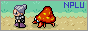
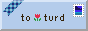
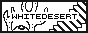
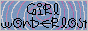
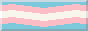
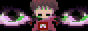
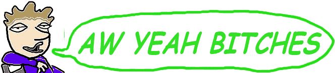

Featured bird
 Pitiguari — Rufous-browed peppershrike
Pitiguari — Rufous-browed peppershrike
I really like the way it trembles when singing, that the couple shares the parental demands and look the same between sexes.
Pitiguari — Rufous-browed peppershrike
I really like the way it trembles when singing, that the couple shares the parental demands and look the same between sexes.
Gave up on floats, changing to grid
Someday february 2026.Started offline remodeling (including a side-navbar)
24th of january 2026.Created this section in the first place.
23rd of january 2026.Adopted a censor panda (age rating standard).
Trimmed down the transdex.
20th of january 2026.Started adding buttons on home.
12th of january 2026.Created the bird-dex!











This album feels so long, but that ain't necessarily bad. The songs are great and varied, Stevie's voice is incredible in Sisters of the Moon and Angel and Lindsey Buckingham sounds wild and dangerous. The use of synths, crunchy electric guitar and his vocal delivery are everything Law and Order wanted to be, even if less paranoid, which is strange for being an album beforehand.